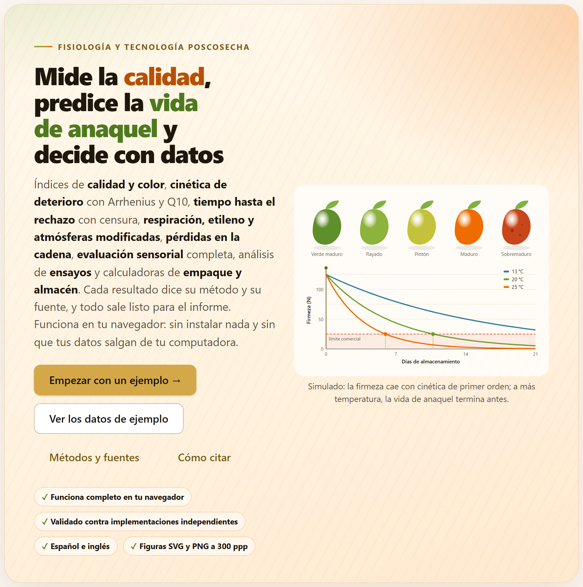
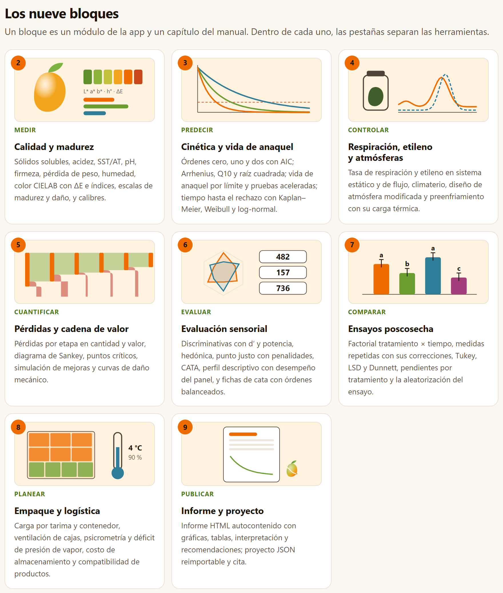
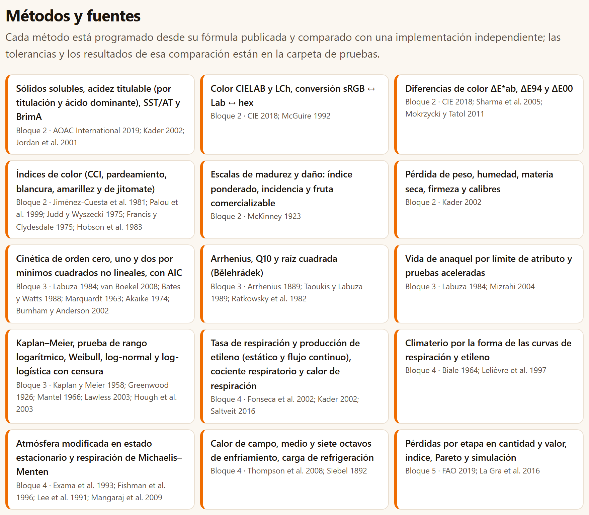
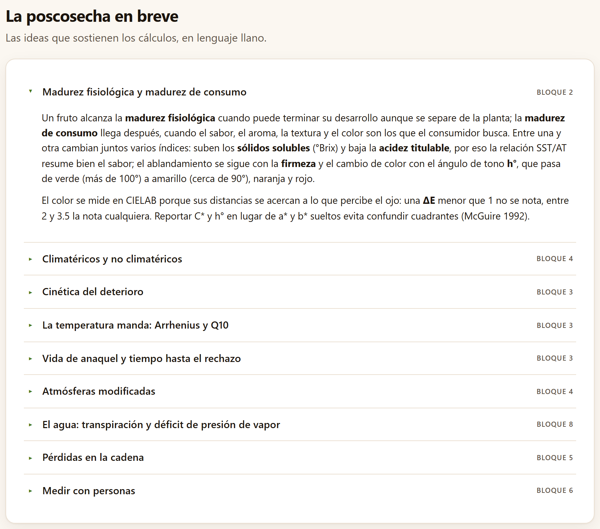
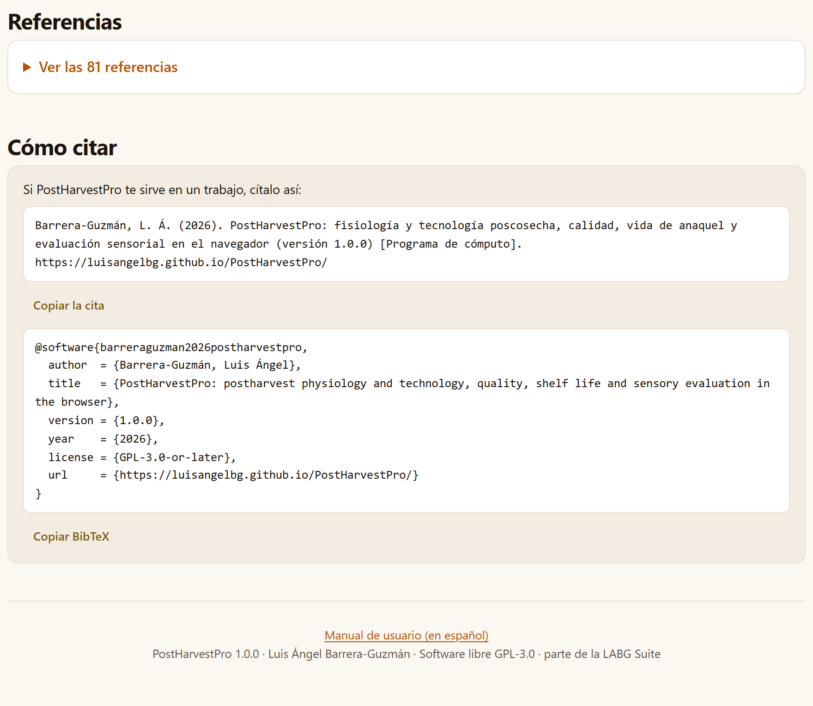

El Bloque 1 es la portada de la app. No calcula nada: dice en una pantalla qué hace PostHarvestPro, resume la ruta de un producto desde la cosecha hasta el consumidor, presenta los ocho bloques de trabajo, abre los diez conjuntos de ejemplo en la herramienta que les corresponde, lista los métodos con su fuente, explica en lenguaje llano la fisiología que sostiene los cálculos y da la cita del programa. Es el lugar al que se vuelve para empezar algo nuevo o para recordar dónde está cada cosa.
Al abrir index.html, la app arranca en el Bloque 1. A diferencia de los demás bloques, éste no tiene pestañas ni tarjetas de datos: es una página de presentación que se recorre de arriba abajo, y la lista En este bloque de la derecha lleva a cada una de sus secciones.
Arriba está el recuadro de presentación. Un rótulo pequeño dice la materia de la app, Fisiología y tecnología poscosecha; debajo va el lema, Mide la calidad, predice la vida de anaquel y decide con datos, y un párrafo que enumera lo que hace, de los índices de calidad y el color a las calculadoras de empaque y almacén, y termina con dos promesas: cada resultado dice su método y su fuente, y los datos no salen de tu computadora.

1 2 3 4 5 6La ilustración lleva su pie: Simulado: la firmeza cae con cinética de primer orden; a más temperatura, la vida de anaquel termina antes. Es un dibujo, no un resultado: no cambia con los datos que cargues. Pero resume la idea central del programa, la que el capítulo 3 convierte en números: la misma fruta, con la misma firmeza inicial, llega al límite en días muy distintos según la temperatura a la que se guarda. Las curvas se trazan de izquierda a derecha al abrir la portada; si apagas las animaciones con el botón de destellos de la barra superior, o si tu sistema pide reducir el movimiento, aparecen ya dibujadas.
Los tres botones de abajo sólo desplazan la página. El primero, en cambio, hace lo mismo que el botón Abrir en 2 · Resumen de calidad de la tarjeta del mango en Datos de ejemplo: cambia de bloque y de pestaña, carga la tabla y deja ver los resultados.
Cargar un ejemplo o tus propios datos no cambia nada en el Bloque 1. Lo que sí cambia es la barra de la izquierda: el número de un bloque se vuelve una palomita cuando ese bloque ya tiene un resultado. El nombre PostHarvestPro de la barra superior siempre regresa aquí.
La primera sección debajo de la presentación, Cómo funciona, resume el recorrido en siete recuadros numerados (figura I.5 de la introducción). Su subtítulo lo explica: La ruta sigue al producto desde la cosecha hasta el consumidor. Cada bloque recibe tus datos (o un ejemplo), revisa que estén completos, calcula, explica el resultado en palabras y deja su parte en el informe.
| Paso | Nombre | Lo que dice la app | Dónde se hace |
|---|---|---|---|
| 1 | Medir | calidad, color y daño | 2 Calidad y madurez (capítulo 2) |
| 2 | Modelar | el deterioro y la temperatura | 3 Cinética y vida de anaquel |
| 3 | Respirar | respiración y atmósfera | 4 Respiración, etileno y atmósferas |
| 4 | Cuantificar | pérdidas en la cadena | 5 Pérdidas y cadena de valor |
| 5 | Evaluar | con jueces y consumidores | 6 Evaluación sensorial |
| 6 | Comparar | tratamientos en el tiempo | 7 Ensayos poscosecha |
| 7 | Publicar | informe y proyecto | 9 Informe y proyecto (capítulo 9) |
El Bloque 8, Empaque y logística, no tiene paso propio: sus cuentas de tarima, ventilación, almacén y compatibilidad acompañan a cualquiera de los pasos, como dice la sección I.8. La ruta sirve para no olvidar nada, no para imponer un orden: cada pestaña trabaja con su propia tabla y puedes entrar directo al Bloque 6 para analizar una cata sin haber pasado por los demás.
La sección Los nueve bloques tiene una tarjeta por cada bloque del 2 al 9 (el 1 es esta misma portada). Cada una lleva el número del bloque, un dibujo propio hecho por código, una etiqueta con el verbo de lo que hace, el nombre del bloque y la misma línea que la app pone debajo de su título. Un clic en cualquier parte de la tarjeta abre el bloque. El subtítulo de la sección resume la correspondencia con este manual: Un bloque es un módulo de la app y un capítulo del manual. Dentro de cada uno, las pestañas separan las herramientas.

| Bloque | Etiqueta | Nombre | Capítulo |
|---|---|---|---|
| 2 | Medir | Calidad y madurez | 2 |
| 3 | Predecir | Cinética y vida de anaquel | 3 |
| 4 | Controlar | Respiración, etileno y atmósferas | 4 |
| 5 | Cuantificar | Pérdidas y cadena de valor | 5 |
| 6 | Evaluar | Evaluación sensorial | 6 |
| 7 | Comparar | Ensayos poscosecha | 7 |
| 8 | Planear | Empaque y logística | 8 |
| 9 | Publicar | Informe y proyecto | 9 |
Al pie de la portada, como al pie de cada bloque, un botón lleva al siguiente: Siguiente · 2 · Calidad y madurez →. Con el teclado, Alt + → hace lo mismo.
La sección Datos de ejemplo reúne las diez tablas simuladas que trae la app, una por tarjeta (figura I.4 de la introducción). Su subtítulo lo advierte: Diez tablas simuladas con modelos y parámetros del orden de los publicados para cada cultivo. No son mediciones: sirven para aprender la app y para comprobar que cada análisis responde como se espera. Cada botón abre la herramienta con el ejemplo cargado.
Cada tarjeta tiene el nombre del conjunto con el sello SIMULADO, una descripción, el archivo de data/ del que sale con su número de filas, un botón Abrir en … por cada herramienta que lo usa y el botón ⤓ CSV, que descarga la tabla para que veas su forma o la uses como plantilla de la tuya. La tabla de la sección I.7 dice qué trae cada conjunto; la de abajo, adónde lleva cada botón.
| Tarjeta | Botones |
|---|---|
| Mango «Ataulfo» almacenado a 13, 20 y 25 °C · 72 filas | Abrir en 2 · Resumen de calidad, Abrir en 3 · Cinética, Abrir en 7 · Factorial |
| Chayote con dos recubrimientos: días hasta el rechazo · 90 | Abrir en 3 · Tiempo hasta rechazo |
| Chayote con dos recubrimientos: pérdida de peso en los mismos frutos · 108 | Abrir en 7 · Medidas repetidas, Abrir en 7 · Pendientes |
| Aguacate «Hass»: respiración en sistema estático · 15 | Abrir en 4 · Sistema estático |
| Aguacate «Hass»: curva climatérica · 13 | Abrir en 4 · Climaterio |
| Cadena de jitomate saladette: pérdidas por etapa · 6 | Abrir en 5 · Pérdidas por etapa |
| Jitomate: ensayo de caídas (daño mecánico) · 60 | Abrir en 5 · Daño mecánico |
| Café: pruebas discriminativas · 3 | Abrir en 6 · Discriminativas |
| Café: 80 consumidores (agrado, punto justo y CATA) · 320 | Abrir en 6 · Hedónica, Abrir en 6 · Punto justo, Abrir en 6 · CATA |
| Café: perfil descriptivo cuantitativo · 64 | Abrir en 6 · Perfil descriptivo |
El mango aparece también, sin botón en la portada, en las pestañas Color, Escalas de madurez y daño y Calibres del Bloque 2, cuyo botón Cargar ejemplo lo abre allí mismo. Cada botón Abrir en … hace dos cosas: abre la pestaña y pulsa por ti su Cargar ejemplo, que reemplaza la tabla que esa herramienta tuviera.
Abrir un ejemplo sustituye la tabla de la herramienta que lo recibe. Si ya cargaste tus propios datos en ella, guarda antes el proyecto (Bloque 9›Proyecto, sección 9.6) para poder volver a ellos.
La sección Métodos y fuentes lista los 28 métodos del programa, cada uno en una tarjeta con su nombre, el bloque en que se usa y las obras que lo definen, abreviadas por autor y año. El subtítulo resume cómo se programaron: Cada método está programado desde su fórmula publicada y comparado con una implementación independiente; las tolerancias y los resultados de esa comparación están en la carpeta de pruebas.
| Bloque | Método | Fuentes |
|---|---|---|
| 5 | Daño mecánico: curvas de impacto, umbral, susceptibilidad y regresión logística con intervalo de Fieller | Bajema y Hyde 1998; Mohsenin 1986; Finney 1971 |
| 6 | Pruebas discriminativas con d′ de Thurstone, potencia y tamaño de muestra | Ennis 1993; Ennis y Jesionka 2011; Brockhoff y Christensen 2010; Bi 2006; Clopper y Pearson 1934 |
| Escala hedónica, ANOVA y Tukey; ordenamiento de Friedman | Peryam y Pilgrim 1957; Friedman 1937; Lawless y Heymann 2010 | |
| Punto justo (JAR) con análisis de penalidades | Xiong y Meullenet 2006; Lawless y Heymann 2010 | |
| CATA: Q de Cochran, McNemar y análisis de correspondencias | Meyners et al. 2013; Cochran 1950; McNemar 1947; Greenacre 2007 | |
| Perfil descriptivo: ANOVA juez × producto, desempeño del panel y ACP | Stone et al. 1974; Næs et al. 2010; Jolliffe 2002 | |
| Órdenes de presentación de Williams y códigos de tres dígitos | Williams 1949; MacFie et al. 1989 | |
| 7 | ANOVA factorial tratamiento × tiempo (tipos I y III) y comparación de medias | Steel et al. 1997; Kramer 1956; Dunnett 1955; Copenhaver y Holland 1988; Piepho 2004 |
| Medidas repetidas: parcelas divididas en el tiempo, Greenhouse–Geisser, Huynh–Feldt, Mauchly | Steel et al. 1997; Greenhouse y Geisser 1959; Huynh y Feldt 1976; Lecoutre 1991; Mauchly 1940; Satterthwaite 1946 | |
| Comparación de pendientes (análisis de covarianza) | Snedecor y Cochran 1989; Holm 1979 | |
| 8 | Patrones de carga en tarima y contenedor | Steudel 1979; Smith y De Cani 1980 |
| Psicrometría, déficit de presión de vapor y transpiración | ASHRAE 2017; Wagner y Pruss 2002; Wagner et al. 2011; Sastry et al. 1978 | |
| Ventilación de cajas y compatibilidad de productos en almacén | Thompson et al. 2008; Kader 2002; Gross et al. 2016; McGregor 1989 |

Es la misma lista, con las mismas abreviaturas, que la línea Método y fuente: de cada resultado y que la sección Métodos y referencias del informe, que incluye sólo los métodos de los bloques que usaste (sección 9.3). El apéndice F reúne las 81 obras completas, agrupadas por tema. Si vas a publicar, cita el método que usaste además del programa: la tarjeta dice cuál.
La sección La poscosecha en breve (Las ideas que sostienen los cálculos, en lenguaje llano.) tiene nueve desplegables, cada uno con el bloque en que se aplica su idea. Al abrir la portada sólo está abierto el primero; un clic en el título abre o cierra cualquiera.
| Desplegable | Bloque | La idea, en una línea |
|---|---|---|
| Madurez fisiológica y madurez de consumo | 2 | Suben los sólidos solubles y baja la acidez, por eso SST/AT resume el sabor; el tono h° pasa de verde (más de 100°) a amarillo (cerca de 90°); una ΔE menor que 1 no se nota y entre 2 y 3.5 la nota cualquiera |
| Climatéricos y no climatéricos | 4 | Los climatéricos tienen un pico de respiración y de etileno autocatalítico y maduran fuera de la planta; la respiración libera unos 10.7 J por miligramo de CO₂ |
| Cinética del deterioro | 3 | Orden cero, uno o dos; el orden se elige ajustando en la escala original y comparando el AIC, no por el R² de una recta |
| La temperatura manda: Arrhenius y Q10 | 3 | ln k = ln A − Eₐ/(RT); el Q10 no es constante; las pruebas aceleradas suponen que el mecanismo no cambia con la temperatura |
| Vida de anaquel y tiempo hasta el rechazo | 3 | Por un límite de atributo o por el rechazo de cada fruto; los frutos sanos al final están censurados, no se descartan |
| Atmósferas modificadas | 4 | El estado estacionario iguala lo que respira el producto con lo que permea la película; β = PCO₂/PO₂ fija la recta de atmósferas posibles |
| El agua: transpiración y déficit de presión de vapor | 8 | El fruto pierde agua en proporción al déficit de presión de vapor; de 3 a 10 % de peso perdido ya lo marchita |
| Pérdidas en la cadena | 5 | Las pérdidas se calculan sobre lo que entra a cada etapa; en kilos pesan las primeras, en dinero las últimas |
| Medir con personas | 6 | Discriminativas, afectivas y descriptivas; el d′ de Thurstone mide el tamaño de una diferencia; los órdenes de Williams evitan el sesgo del orden |
Cada capítulo de este manual vuelve sobre estas ideas con más detalle en sus recuadros «Teoría en breve», junto a la herramienta que las usa.

Cuatro recuadros dicen de frente qué no se puede esperar del programa. Son los mismos límites que tabula la sección I.10 de la introducción, que agrega dos más (no simula la dinámica del empaque ni lee instrumentos):
Las dos últimas secciones de la portada son la bibliografía y la cita. En Referencias, el desplegable Ver las 81 referencias abre la lista completa de las obras que citan los métodos, ordenada alfabéticamente; es la misma que reúne el apéndice F, allí agrupada por tema.
Cómo citar empieza con Si PostHarvestPro te sirve en un trabajo, cítalo así: y da la cita del programa en dos formas, cada una con su botón:
barreraguzman2026postharvestpro, el título en inglés, la versión 1.0.0, el año, la licencia GPL-3.0-or-later y la dirección; se copia con Copiar BibTeX.Al copiar, un aviso breve confirma Copiado. La cita todavía no lleva identificador digital (DOI): se añadirá cuando el programa se publique con uno. La misma cita está al final del Bloque 9 (sección 9.7) y al final de todos los informes. Cierra la portada una nota al pie con el enlace Manual de usuario (en español), que abre este manual en otra pestaña (con la interfaz en inglés dice User’s manual y abre la edición inglesa), y una línea que dice que PostHarvestPro 1.0.0 es software libre (GPL-3.0) y parte de la LABG Suite.

| Si es la primera vez que abres la app | entonces pulsa Empezar con un ejemplo → y recorre el capítulo 2 con el mango; después abre el mismo mango en el Bloque 3 (Abrir en 3 · Cinética). |
| Si tienes mediciones de un lote en el tiempo | entonces empieza en el Bloque 2 para resumirlas y sigue en el 3 para su vida de anaquel y en el 7 para comparar los tratamientos. |
| Si tu pregunta es de respiración, pérdidas, cata o empaque | entonces ve directo a su bloque (4, 5, 6 u 8): cada uno trabaja con su propia tabla o con sus campos escritos. |
| Si no sabes qué columnas debe tener tu tabla | entonces descarga el ⤓ CSV del ejemplo más parecido y úsalo como plantilla. |
| Si vas a publicar los resultados | entonces cita el programa desde aquí o desde el Bloque 9, y cita también el método de cada resultado. |
Son guías para orientarse, no un orden obligatorio.
Un botón Abrir en … lleva a la pestaña, pero no veo resultados. Los resultados están debajo de la entrada de datos; baja con la rueda o usa la lista En este bloque. Los botones de copiar no hacen nada. Algunos navegadores no dejan usar el portapapeles en páginas abiertas como archivo local; selecciona el texto de la cita y cópialo a mano, o abre la app con Open PostHarvestPro.bat (sección I.5). La ilustración no se anima. Están apagadas las animaciones (botón de destellos de la barra superior) o tu sistema pide reducir el movimiento; no afecta a ningún cálculo. Perdí lo que había cargado al abrir un ejemplo. El ejemplo reemplaza la tabla de la herramienta; si guardaste el proyecto, ábrelo de nuevo en el Bloque 9.